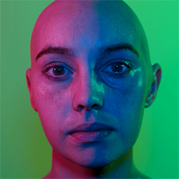
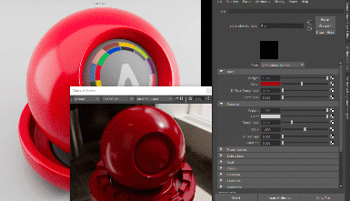
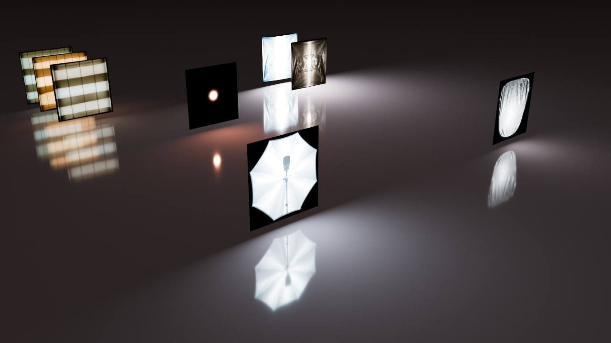
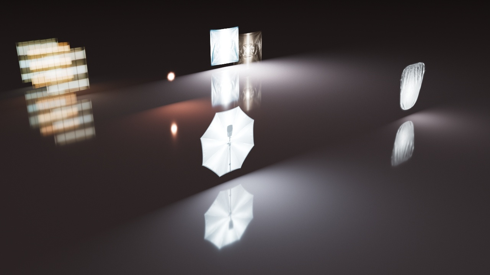
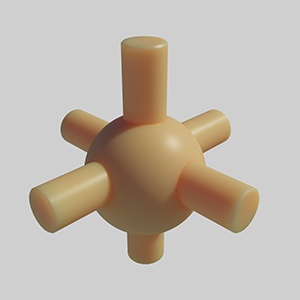
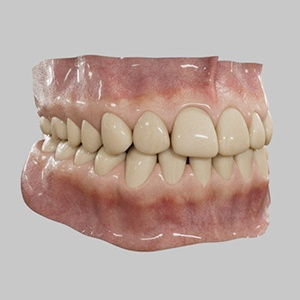
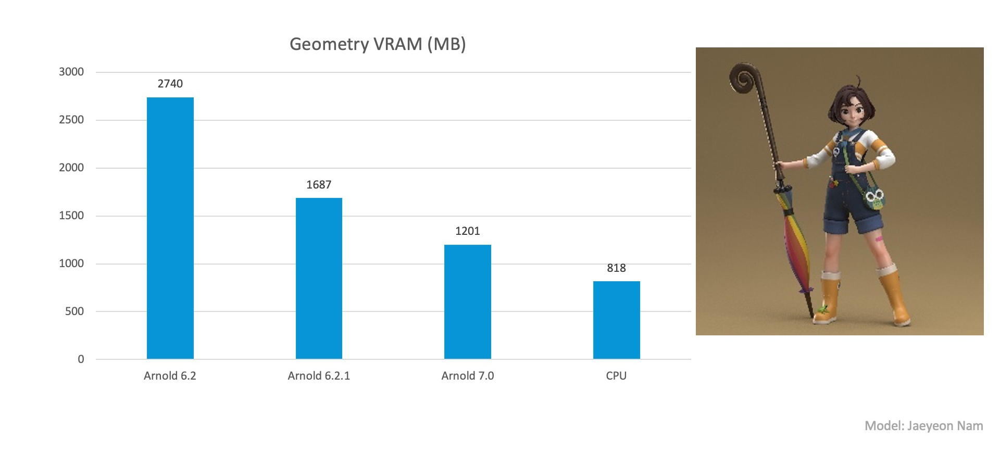

18 Oct 2021
MtoA 5.0.0 introduces Arnold 7.0.0.0 and is a major feature release bringing parallel preview renders on the CPU, multiple outputs for OSL and custom shaders, brand new imagers, and many other enhancements and bug fixes.
Maya 2019, 2020 or 2022
Windows 10 or later, with the Visual Studio 2019 redistributable.
Linux with at least glibc 2.17 and libstdc++ 4.8.5 (gcc 4.8.5). This is equivalent to RHEL/CentOS 7.
macOS 10.13 or later .
CPUs need to support the SSE4.1 instruction set. Apple Mac models with M series chip are supported under Rosetta 2 mode.
GPU rendering works on Windows and Linux only and requires an NVIDIA GPU of the Ampere, Turing, Volta, Pascal, or Maxwell architecture. We recommend using the 470.74 or higher drivers on Linux and 472.12 (Quadro), 472.12 (GeForce) , or higher on Windows. See Arnold GPU for more information.
Optix™ denoiser requires an NVidia GPU with CUDA™ Compute Capability 5.0 and above.
MtoA 5.0.0 works with the following Maya plugins:
**Parallel preview renders on the CPU :** MtoA can render the Material Viewer and the swatch in parallel with the primary render in Arnold Render View or Arnold Viewport. Users can also perform file operations like export to scene, render to texture in parallel to rendering.
Scene Units : When exporting scenes to Arnold, the scene units defined in the Render Settings ( System ) are now stored in the .ass file header. This allows loading the file in a scene having different scene units, with consistent results. A Standin loading a .ass file will now appear with a different scale if the current scene units are different from the ones used during export. By default, MtoA uses the scene units defined in the Maya Preferences.
Open Image Denoise imager: Intel ® 's Open Image Denoise (OIDN) is a fast, AI-accelerated denoiser that runs on CPU that has been integrated into Arnold as the [imager_denoiser_oidn](topicid=arnold_user_guide_ac_denoising_ac_denoiser_oidn_html) imager as an additional denoising option. (ARNOLD-8677).
* **Higher quality AI denoising:** The OptiX and OIDN denoisers now use the newly introduced *denoise_albedo_noisy* AOV as the albedo feature AOV provided to the denoiser. This adds specular reflections and refractions to the albedo, which can improve denoiser quality. Below are comparisons between undenoised and Optix denoised with the old and new albedo AOV (ARNOLD-10812).
| | | |
| --- | --- | --- |
|  |  |  |
|
|
|
|
| | | |
| --- | --- | --- |
|  |  |  |
|
|
|
|
<sup><strong>Undenoised (left), Optix diffuse albedo (center), Optix diffuse+specular albedo (right).</strong></sup>LUT based tone mapping: [imager_tonemap](topicid=arnold_user_guide_ac_imagers_node_ac_imager_tonemap_html) now supports a lut mode to apply LUT files in all the formats supported by OCIOv2 ( cube, look, 3dl, clf among others). imager_tonemap.lut_filename specifies the file to load. Note that some LUTs assume a non-linear color space. To help with this, it is possible to specify a working color space in imager_tonemap.lut_working_color_space to convert to the specified space, apply the lut, and convert to linear or rendering color space again (ARNOLD-11084).
|
Automatic selection of box filtering with OIDN and OptiX denoisers: The OptiX and OIDN denoisers do not perform well with CPU rendering filters that span across multiple pixels. Arnold on CPU will now automatically force a box filter on outputs with filters with known issues when either of the denoisers are used (ARNOLD-10812).
Imager_color_curves : A new imager to control brightness and color curves has been added. Separate curves can be authored for each R, G, or B component, along with the main curve to control the overall luminance response. Curve interpolation and working color space can also be set as needed (ARNOLD-11161).

imager_tonemap.mix: imager_tonemap now has an additional mix parameter. 0 preserves the input untouched and 1 applies the full node effect (ARNOLD-11172).
Ignore imagers option: The global option ignore_imagers has been added to allow users to disable imager post-processing in a scene. This can be useful for debugging and can also be enabled via kick with the -ii flag. (ARNOLD-10720).
Improved support for imagers shared by multiple drivers: All imagers, including the denoisers, can now be shared by drivers with different AOV inputs (ARNOLD-11087).
Improved imagers refresh rate in IPR: Fullframe imagers will now be updated during rendering so that the imager chain result can be previewed before the entire image has been rendered. This replaces the previous behavior where in some cases we would have to delay the result until after the full frame had finished (ARNOLD-11203).
Improved filter performance in progressive rendering: The performance of several filters, including the Triangle, Sinc, Blackman-Harris, Catmull-Rom, and Mitnet filters have been improved when rendering in progressive mode. In some cases, we have seen a 48% improvement in performance and a 20x improvement in memory usage (ARNOLD-10651).
Added support for multiple parallel render sessions on CPU: Any Arnold universe can now be rendered using its own render session (only one render session per universe). Those render sessions can be executed in any order, even in parallel.

The existing API ( `AiBegin` ) creates a default universe and render session, which can be used or ignored. Additional universes can be created and destroyed as usual with their API, but there is a new API that allows creating/destroying and using render sessions:
```
AtUniverse* universe = AiUniverse();
AtRenderSession* rs = AiRenderSession(universe);
AiRenderBegin(rs);
. . .
AiRenderEnd(rs);
AiRenderSessionDestroy(rs);
AiUniverseDestroy(universe);
```Multiple outputs for shaders: Arnold now supports having multiple outputs for shader nodes. Shader outputs can be linked to inputs of other shader nodes in a .ass file or programmatically via the AiNodeLinkOutput() function by optionally specifying which output is desired when linking. When no output is specified, the node's default output parameter will be chosen, preserving Arnold's existing behavior.
Standard OSL language rules apply when specifying multiple OSL shader outputs. An example OSL shader with three color outputs could look like the following snippet and each output could be connected separately :
shader test_shader (output color result = color(1, 1, 1),
output color good = color(0, 0, 1),
output color bad = color(1, 0, 0))
{ ... } Visible lights now transparent: The visible lights are now transparent, which matches the behavior of indirectly seen lights. This also has the benefit of allowing black parts of textured lights to be masked away. This is a look-breaking change to fix previously incorrect visible light behavior (ARNOLD-9070).
|  |  |
|
kick ascii render mode: kick -ascii allows rendering directly into the terminal. This requires a 24-bit terminal with UTF-8 support. The windows terminal, most Linux terminals, and iTerm support this; Apple's Terminal does not. This will change the resolution of the render to fit within the console, so any images written to disk will likely be very small. Because it is so low res, telling kick to use a small bucket size is recommended, for instance by passing -bs 16 to kick. This can be useful for checking if a render on a remote machine is working (ARNOLD-11146).
Render in ACEScg by default: Arnold will now use an OCIO color manager by default. This color manager will use the default OCIO configuration file. Arnold will render in the ACEScg color space by default. (ARNOLD-11246):
\-set ai_default_color_manager_ocio.color_space_linear "scene-linear Rec.709-sRGB" Standard OCIO configuration: Arnold now ships with a standard OCIO configuration exposing common color spaces used for rendering, such as ACEScg and scene-linear Rec.709-sRGB as well as the ACES 1.0 SDR-video ACES output transform for standard dynamic range video . This configuration is compatible with the default Maya 2022 OCIO configuration. (ARNOLD-11333):
Multi-part EXR: The EXR driver can now render AOVs as separate images (parts) in a multi-part EXR file (merged AOVs, in contrast, renders AOVs as layers in a single-part EXR).
Multi-part works with either scanline or tiled EXRs and is enabled with the driver_exr.multipart boolean parameter.
Write AOVs to multiple formats: It is now possible to output a single AOV in multiple different formats, for example, the following output string will now output the correct result (ARNOLD-11079).
outputs 2 1 STRING "RGBA FLOAT filter testrender" "RGBA RGB filter testrender2" OSL UDIMs: OSL now uses the same code as Arnold's image node for resolving texture tags, such as UDIMs. This can make OSL texture lookups faster and increase the types of texture tags that can be used from OSL. (ARNOLD-9276).
SSS setnames with randomwalk: The sss_setname feature that allows subsurface effects to spread between distinct objects is now supported in the randomwalk mode on CPU (ARNOLD-8140).
 
Use Existing TX: When options.texture_use_existing_tx is set to true, which is the default, Arnold will attempt to use the .tx version of a texture when available. The .tx file must be located in the same directory as the requested source texture and have the same name with the exception of the file extension. For instance, if "foo/bar/floor.png" is requested and "foo/bar/floor.tx" exists then "floor.tx" will be used. Arnold will ignore any requested colorspace conversions when the .tx file is used since we assume the .tx will have the colorspace transform baked in (ARNOLD-4107).
Support for MaterialX v1.38: Arnold extends its MaterialX support to v1.38. As a part of this upgrade, looks and materials exported from Arnold will now be expressed as a combination of Nodes and Inputs departing from the previous standard of ShaderRefs and Params. Arnold will still be able to render MaterialX documents exported with earlier versions of Arnold however this may cause a look-breaking change.
Cryptomatte 1.1.2: Cryptomatte has been updated to version 1.1.2 (ARNOLD-11270).
Multiple outputs for OSL and custom C++ shaders : User created OSL and C++ shaders now supports multiple outputs.

flipR and flipG in Maya's bump2d disabled by default - this is different from the previous behavior to keep compatible with Mental Ray (MTOA-301)
Removed denoise_optix_filter: With the introduction of the imager_denoiser_optix node, the old denoise_optix_filter code path has become redundant and therefore removed. (ARNOLD-11204)
imager_denoiser_optix clamp disabled by default: The default of the imager_denoiser_optix's clamp parameter has now been set to disabled. (ARNOLD-11187)
Support for MaterialX v1.38 : There's a look-breaking change that affects certain materialX documents. If your document contains a connection to a MaterialX nodeGraph without explicitly specifying the output of the nodegraph the node is connecting to, we used to be returning a NULL meaning so the connection was not applied. In this version, if this scenario exists we return the first output to the nodegraph.
Multiple render sessions : For the API updated as described above, the old API was maintained as deprecated and is implicitly using the default universe/render session. This will work fine when using the default universe and render session, but any code expected to work on an arbitrary universe/render session will have to be updated with the new API passing an explicit universe or render session.
options.pin_threads: pin_threads has been removed from the options node. Threads are now never pinned. (ARNOLD-11073)
AiOutputIteratorGetNext : AiOutputIteratorGetNext switched from taking a const char** output_name to the more efficient AtString* output_name . (ARNOLD-11357)
Removed source code info from API functions : AiMalloc_func(), AiFree_func(), AiRealloc_func(), AiArrayGet*Func() , and AiArraySet*Func() all took source code info (filename and line number). These functions have been removed and their previous macros ( AiMalloc(), AiFree(), AiRealloc(), AiArrayGet*() , and AiArraySet() ) which were setting the source code info are now proper functions. If you were using the macros you should not need to modify any code. (ARNOLD-5785, ARNOLD-10754).
options.scene_units_in_meters : The scene_units_in_meters option and metadata have been renamed to meters_per_unit , putting them more in line with their equivalents in the USD standard. Note that these values now have an inverse interpretation to what they had before, so implementations must now provide values such that: new_scene_units_value = 1 / old_scene_units_value (ARNOLD-11176)
Renamed AiUniverseIsActive to AiArnoldIsActive : The AiUniverseIsActive API function is now renamed to AiArnoldIsActive (ARNOLD-11120)
Autodesk Network Licensing version : Arnold 7 switches to ARNOL_2022 licensing.
ARNOL_2022 licenses.[MTOA-90] - Unloading Arnold on Mac or Linux crashes Maya
[MTOA-780] - Imager properties UI in ARV refreshes even when it's the same node
[MTOA-698] - Error exporting looks (name 'unicode' is not defined)
[MTOA-684] - MtoA automatically injects ai_translator attrs in scenes on save
[MTOA-661] - IPR: Creating a camera bookmark triggers re-render
[MTOA-384] - Error when you export scene
[MTOA-285] - Qt test examples fail
[MTOA-840] - OSL shaders with INT ouputs not loading
ARNOLD-3573 - Incorrect log color in Windows consoles when using multiple threads
ARNOLD-11625 - Empty backtrace when using printBackTrace() outside a crash on Windows
ARNOLD-11230 - Low transmission_depth values causes dielectrics to be too dark
ARNOLD-11421 - Progressive render IPR can get stuck at final AA level
ARNOLD-11178 - Unexpected normal smoothing behavior
ARNOLD-11228 - Using ray/shader switches to lower transmission depth causes dielectrics to be too dark
ARNOLD-11562 - [Alembic] UV data in curves not interpolated correctly when overriding curve.basis
ARNOLD-11361 - [Alembic] user data on curves is interpolated incorrectly
ARNOLD-8934 - [GPU] Arnold "Render Section to Texture" crashes Maya
ARNOLD-11687 - [GPU] 8-bit RGBA sRGB textures render incorrectly in ACEScg
ARNOLD-10996 - [GPU] Crash or artifacts when multiple image nodes point to the same texture
ARNOLD-11515 - [GPU] Crash when destroying procedurals interactively using 470 Nvidia drivers
ARNOLD-11621 - [GPU] Discrepancy with SSS closures in OSL
ARNOLD-11241 - [GPU] Missing alpha channel in RGBA-typed LPE AOVs
ARNOLD-11466 - [GPU] denoise_albedo is black on SSS
ARNOLD-11444 - [Imagers] Crash after an imager_denoiser_optix error
ARNOLD-11087 - [Imagers] Incorrect result when multiple drivers with different AOVs share a single imager
ARNOLD-11071 - [MaterialX] Crash when multiple objects share the same material
ARNOLD-11089 - [OCIO] OCIOColorManagerGetKnownChromaticities() not working with OCIO environment variable
ARNOLD-11538 - [OCIO] Random crashes when using the color API from multiple threads
ARNOLD-8521 - [OSL] UDIM textures through OSL do not have their color transform applied
ARNOLD-9190 - [Noice] Crash when using a small data window
usd#751 Render delegate crashes when changing material terminals interactively
usd#797 Warning messages when HdArnoldRenderPass is deleted
usd#847 Procedural should check the camera of the proper universe for motion blur settings
usd#858 Can't hide/unhide lights in Hydra
usd#853 Missing indices for facevarying primvars in Hydra abort renders
usd#871 Enforce writing multiple frames when no default is authored
usd#802 B-spline curves not using radius in procedural
usd#798 SdfMetadata clashing with another NdrDiscovery plugin
usd#816 The procedural does not use "driver:parameters:aov:name"
usd#880 Scenes using pre-21.02 light parameters are not rendering correctly
usd#884 Render delegate shouldn't call AiBegin/AiEnd if Arnold is already active
usd#843 Disabling render purposes does not hide geometries in Hydra
usd#887 Int parameters are not converted to unsigned int shader parameters in the render delegate